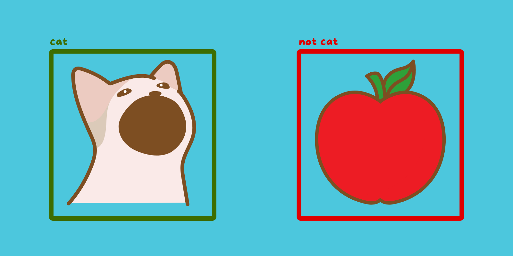
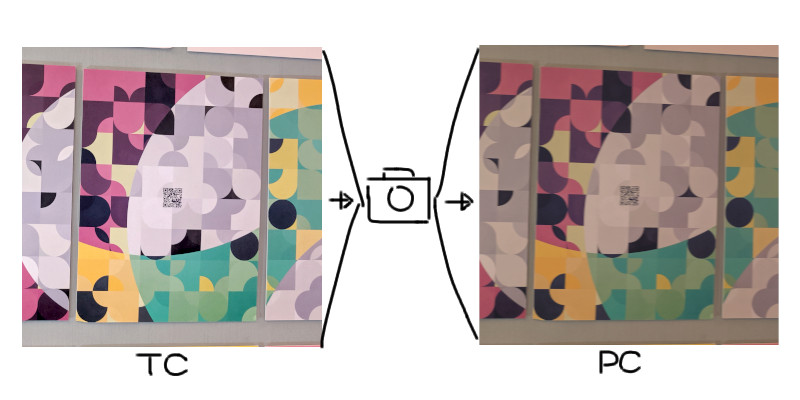
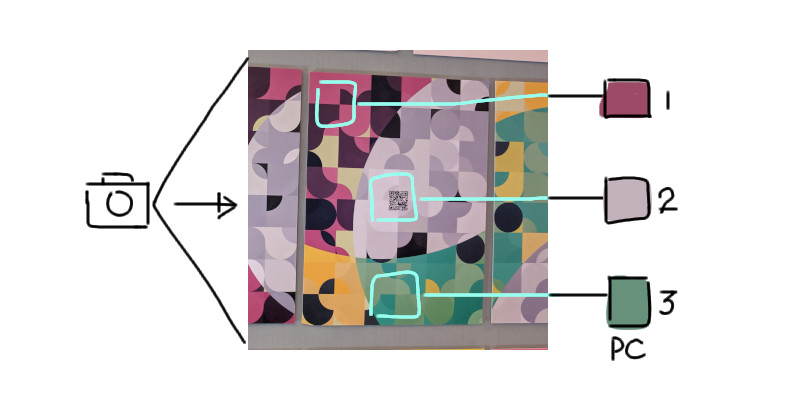
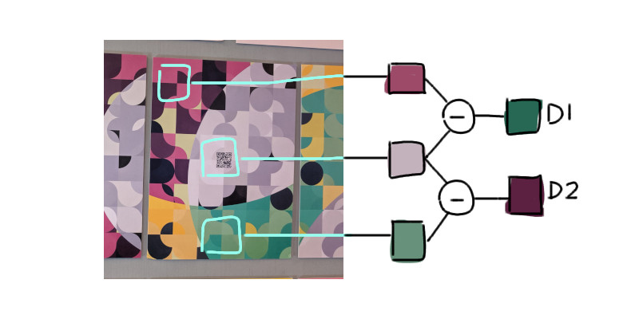
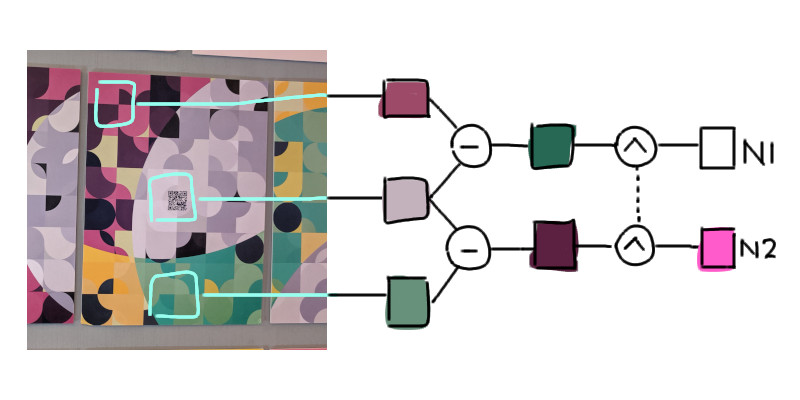
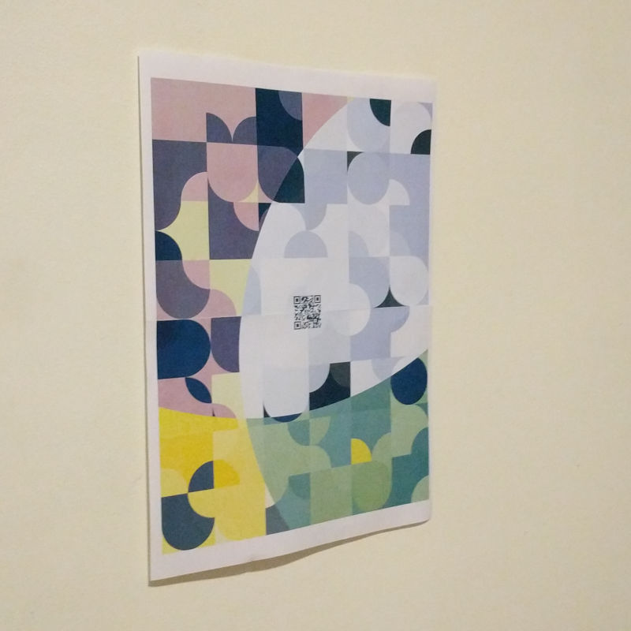
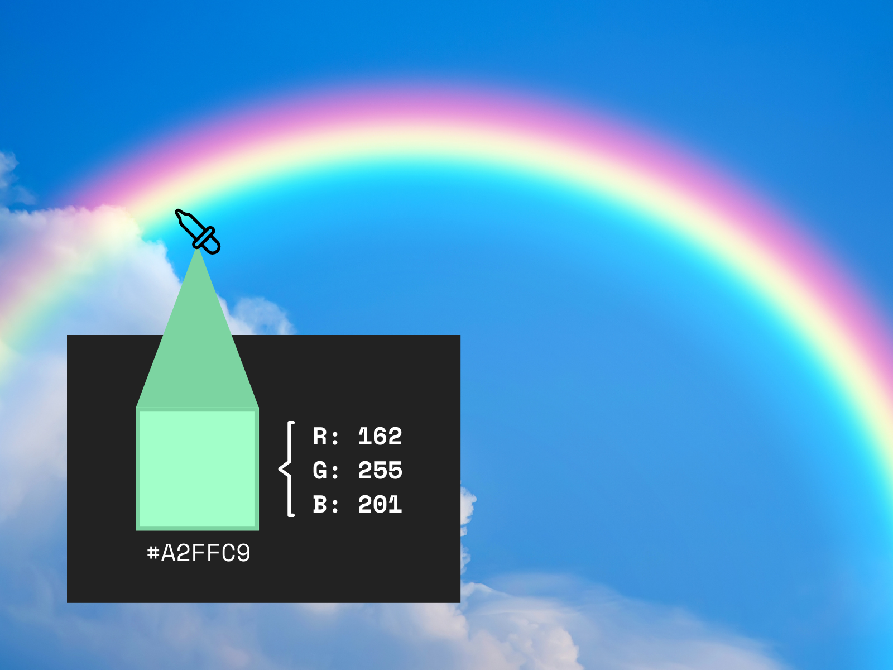
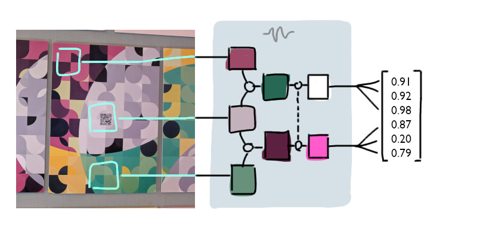
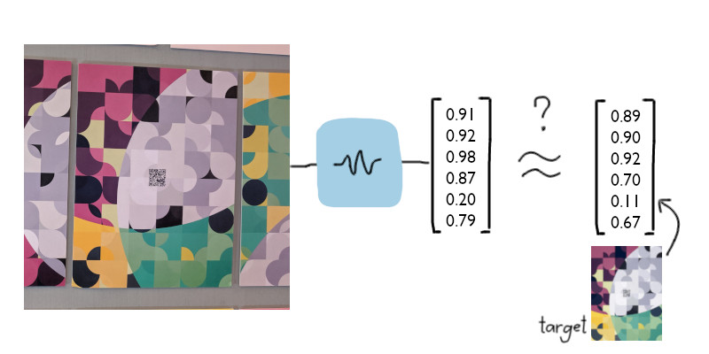

Hi there! I want to share my experience with an image recognition problem I faced in an art project (It was an augmented reality art project).

Image recognition problems come in different forms.
As part of the project, I needed a mobile app to be able to recognize a particular art piece. Then it can overlay virtual effects onto the real-world image. The goal was to have a unique and engaging experience!
The app should recognize when the target art piece has been aligned.
There are various solutions available for tackling this problem, ranging from basic histogram matching to advanced convolutional neural networks. There are even libraries that can provide a solution right out of the box! But I decided to take on the challenge of developing my own solution instead of relying on existing tools. Not only did this allow me to learn something new, but it also let me have some fun approaching the problem!
TL;DR - It converts the camera image into a feature vector and then compares that against a predefined target reference.
Color and illumination theory
To begin solving the problem, we first need to understand the mechanics. It all starts by capturing an image from the camera.
Now, it’s important to keep in mind that the camera’s perception of color can be influenced by various factors. Factors include the lighting conditions in the room or the quality of the camera itself. We need to account for these variables in our solution.

True color (TC) vs perceived color (PC)
Simply comparing raw pixel data against the target image would likely fail due to the unknown environmental factors. One way of addressing this is to massage the input to isolate the true color from the environmental factors.
For this, I created a graphical model for the perceived color. It’s roughly based on CGI illumination models. This was the key to making the image recognition algorithm more robust.
Here’s the equation:
PC = TC * a + b
PC is the color perceived from the camera sensor.TC (unknown variable) is the true color of the material.a and b (unknown variables) are parameters that together describe the vague real-world lighting variables like white balance, environmental illumination, camera sensor quality, and other factors.
The algorithm begins by calculating the average colors of three predetermined regions within the image. While these regions are specific to my art piece, you can adapt the algorithm to work with any configuration of (at least) three regions.

The regions were specifically chosen to capture key features.
Let’s call the three colors PC1, PC2, and PC3.
To get the average, you can either (1) read over the pixels in those regions and average them, or (2) downsample the image and directly use pixel colors (typically faster). For this case, I used the former, which is reading over the pixels within each region to calculate the average color.
// <video> element streams the camera, not shown here how
video = document.getElementById('video');
// <canvas> to hold a video frame for reading pixels
canvas = document.getElementById('canvas');
// Capture a video frame into the canvas
const canvasContext = canvas.getContext('2d');
canvasContext.drawImage(video, 0, 0, width, height);
const imageData = canvasContext
.getImageData(0, 0, width, height)
.data;
// Get the colors
const pc1 = getRegionAverageColor(imageData, regionRect1);
const pc2 = getRegionAverageColor(imageData, regionRect2);
const pc3 = getRegionAverageColor(imageData, regionRect3);
function getRegionAverageColor(imageData, rect) {
const lineStride = 4 * width;
let r = 0;
let g = 0;
let b = 0;
for (let j = rect.y; j < rect.y + rect.height; j++) {
for (let i = rect.x; i < rect.x + rect.width; i++) {
r += imageData[j * lineStride + i * 4] / 0xff;
g += imageData[j * lineStride + i * 4 + 1] / 0xff;
b += imageData[j * lineStride + i * 4 + 2] / 0xff;
}
}
const count = rect.width * rect.height;
return {
r: r / count,
g: g / count,
b: b / count
};
}
Refer to these MDN articles Manipulating_video_using_canvas and ImageData for details about the Web APIs.
After getting the colors, we can start processing them. First, subtract the top PC1 and middle PC2 colors, as well as the middle PC2 and bottom PC3 - like a 1-dimensional convolution. The order of subtraction doesn’t really matter. This produces two difference colors.
Let’s call the resulting colors D1 and D2:

// To subtract two colors, we subtract each RGB component
const d1 = {
r: pc1.r - pc2.r,
g: pc1.g - pc2.g,
b: pc1.b - pc2.b
};
const d2 = {
r: pc2.r - pc3.r,
g: pc2.g - pc3.g,
b: pc2.b - pc3.b
};
Subtracting two perceived colors eliminates the unknown lighting variable b, as demonstrated in the following derivation:
D1 = PC2 - PC1
= (TC2 * a + b) - (TC1 * a + b)
= TC2 * a - TC1 * a
= (TC2 - TC1) * a
The resulting D1 and D2 are actually proportional to the true colors. But, they’re still both influenced by the lighting factor a:
D1 = (TC2 - TC1) * a
D2 = (TC3 - TC2) * a
To remove the remaining lighting variable a, we can "normalize" the values. That is, divide each by the largest value among them.
N1 = D1 / max(|D1|, |D2|)
N2 = D2 / max(|D1|, |D2|)
The resulting values N1 and N2 represent normalized D1 and D2 respectively.

And here’s the code for that:
// Get 'max(|D1|, |D2|)'
const d1Magnitude = Math.hypot(d1.r, d1.g, d1.b);
const d2Magnitude = Math.hypot(d2.r, d2.g, d2.b);
// Add 0.001 to avoid division by zero
const max = Math.max(d1Magnitude, d2Magnitude) + 0.001;
const n1 = {
r: d1.r / max,
g: d1.g / max,
b: d1.b / max,
};
const n2 = {
r: d2.r / max,
g: d2.g / max,
b: d2.b / max,
};
I’m not showing the full derivation here, but normalizing will get rid of the common factor a. The handwavy explanation is, if you divide two values having a common factor, that factor gets canceled out.
Thus, if we expand all the terms:
N1 = (TC2 - TC1) / max(TC2 - TC1, TC3 - TC2)
N2 = (TC3 - TC2) / max(TC2 - TC1, TC3 - TC2)
The result is that the final values N1 and N2 are derived purely from true color and are not affected by lighting parameters. According to the model anyway.
This whole preprocessing ensures that the algorithm is robust across different lighting conditions and phone cameras, as it only uses true color data.

Actual test piece used in development. Even this badly-printed image in poor lighting can be recognized by the algorithm.
Feature vectors
At this point, we can start looking at individual RGB values instead of thinking about "colors". You see, colors are just numbers representing red, green, and blue values.

A color is composed of RGB values
From the normalized colors N1 and N2, we can obtain six numerical values (three from each). These values can be rolled into one combined series of numbers, which we’ll call the feature vector of the image. The feature vector can be thought of as a numerical representation of certain characteristics of the image.
const featureVector = [
n1.r,
n1.g,
n1.b,
n2.r,
n2.g,
n2.b,
];
In short, the feature vector summarizes the image.

By turning colors into plain numbers, we say goodbye to subjective perceptions of color and enter the objective and computable realm of mathematics.
This reduces the problem of comparing image similarity into a simple numerical comparison. If the numbers match, then the images match!
Now, we just need the feature vector of the target image to compare with. We can precompute the same normalization process on the target image and hardcode the resulting feature vector in the app.
I also got a couple more samples from real photos of the print for good measure.
// (original + real sample 1 + real sample 2) / 3
const targetFeatureVector = [
(
-0.3593924173784146 +
-0.3030924568415693 +
-0.27620639981601575
) / 3,
(
-0.611915816235142 +
-0.590167832630535 +
-0.5946857824325745
) / 3,
(
-0.498629075974555 +
-0.4975375806689763 +
-0.49879828486061084
) / 3,
(
0.35716016633879705 +
0.4556467533062926 +
0.47164734468790415
) / 3,
(
0.17718492626963767 +
0.1053991137797178 +
0.13449453064454686
) / 3,
(
0.2980055137889341 +
0.30589264583678 +
0.2811110391693084
) / 3
];
Now that we’ve got the feature vectors for both the camera image and target image, we can compare them apples to apples.

We can use Euclidean distance as a measure of vector similarity. Remember, vector similarity is our proxy for image similarity!
const vectorDistance = Math.hypot(
...featureVector.map(
(value, index) =>
targetFeatureVector[index] - value
)
);
if (vectorDistance < THRESHOLD) {
// Image recognized!
}
If the distance between the two vectors is below a certain threshold, then it’s a match!
Voilà! That’s the algorithm. You take the input image, turn it into a feature vector, and compare it to a precomputed target vector. The whole image detection code totals less than 200 lines and requires no external library! This algorithm was integrated into the AR app that came along with the art exhibition.
Conclusion
So, that’s the image detection algorithm I developed for my AR art app. It’s pretty straightforward and efficient, with just a few lines of code. It’s also fast enough to run in real-time on a phone camera feed, which is nice.
Although it was designed for the specific images I had, you can customize it to suit your needs.
Now, the algorithm does have a few limitations. It doesn’t take into account the positioning of the input image, so it has to be in the exact orientation as the target image. Also, extreme lighting conditions, irregular shadows, shiny surfaces, and the like might affect its accuracy.
Overall, I’m pretty happy with how it turned out. While it’s not a general-purpose algorithm, it solved the problem for my art project perfectly. 😄
Demo!
Want to try out the algorithm? Open this page on a desktop, and then use your phone to scan the QR code in the piece.
 Go to kalabasa.github.io/dimensions/ on your phone if QR doesn’t work.
Go to kalabasa.github.io/dimensions/ on your phone if QR doesn’t work.
Want to learn more about the art project that this image detection algorithm was a part of? Check out the Dimensions project!